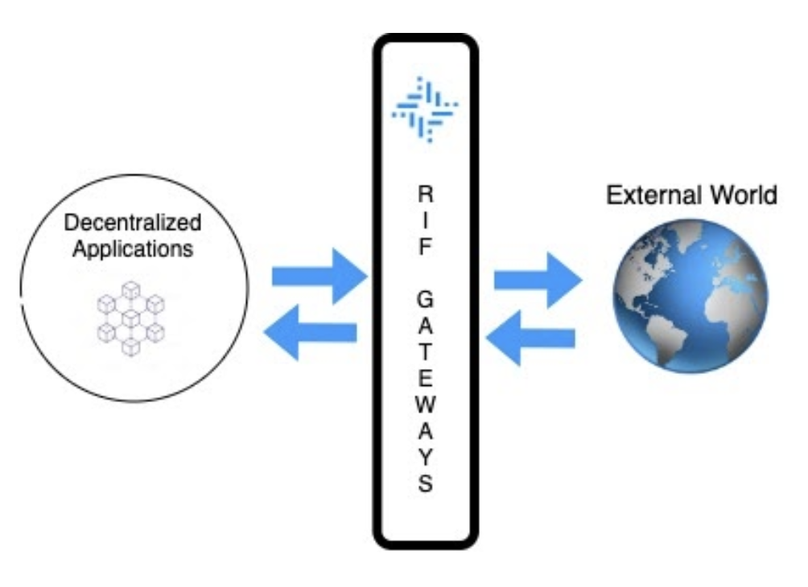
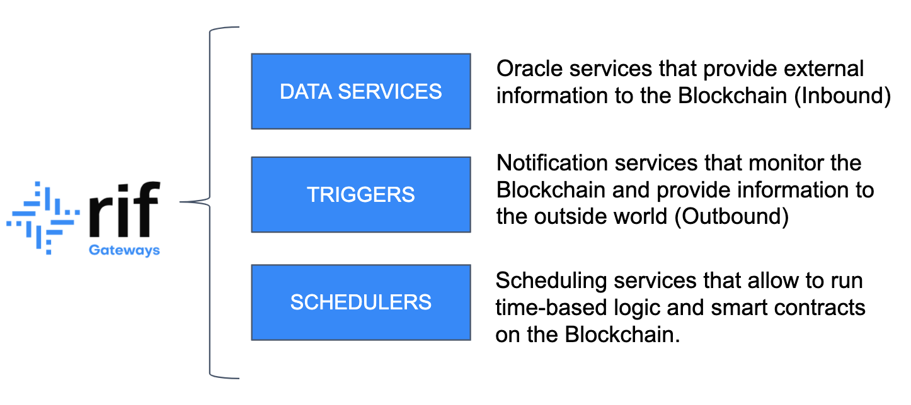

現時点で、ブロックチェーン技術は従来の集中型ソリューションよりも優れており、幅広い業界を劇的に崩壊させ、そして恐らくは今日の世界の形の変える可能性があることは明らかです。ブロックチェーンとスマート・コントラクトにより新たなレベルの信頼がもたらさるため、仲介者（代理店）が必要なくなり、全体としてはるかに安全かつ透明性の高いシステムが構築されます。ブロックチェーンとその分散型の性質により、スマート・コントラクトは改ざん不可能にされ、この方法（入力、コードおよび結果を変更する関係者なし）でビジネス・ロジックを実行する機能は、法的契約や自動決済システムなどの様々な状況で大きく役立ちます。
しかし、ブロックチェーン技術におけるセキュリティと信頼性にも代償が伴います。いくつかのロジックを実行するために外部アプリケーションからデータ値を取得する、メッセージを外部システムに送信する、定期的/反復的なトランザクションをスケジュールするなどの比較的単純なタスクの実行については、ブロックチェーン・アプリケーションのコンテキストで実装するのは非常に困難です。スマート・コントラクトの実行は決定論的でなければならず、オンチェーン・スマート・コントラクトは、ブロックチェーンに存在しないデータに簡単にアクセスできないため、従来のアプリケーションと比較して不利な点があります。
RIFゲートウェイにおいて、当社はこの課題に取り組み、ブロックチェーンの外部を考えます。 このサービスの主な目的は、開発者や企業が外部の世界とシームレスに相互作用できるブロックチェーンベースのアプリケーションを設計できるようにするための使いやすいツールや技術を開発し、広範囲の新たな使用例を可能にすることです。詳細については、RIFウェブサイトに掲載されている、RIFゲートウェイ・ホワイトペーパーをご覧ください。
RIFゲートウェイは、研究における最新の進歩を活用して最も広く認識されている業界ソリューションを統合します。同時に、これらのテクノロジー実装の複雑さを大幅に低減できるような、統一された共通のインターフェース層を提供します。幅広いデータ消費、サブスクリプションおよび決済モデルをサポートするための、安全かつ信頼性の高いデータ転送を消費者とプロバイダーが容易にセットアップするのを可能にします。

RIFゲートウェイは、分散型ブロックチェーンベースのアプリケーションが外部の世界と相互作用する必要があるすべてのシナリオに対応可能な3つの主要サービスで構成されています。これらのサービスは、データ・サービス、トリガ、およびスケジューラです。各サービスには、それぞれ独自の難しさと課題があり、望ましい結果を達成するためには、特定のツールおよび技術が必要です。次のセクションでは、個々のサービスについて詳しく説明します。

RIFデータ・サービスは、外部の世界からブロックチェーンに送信される情報（インバウンド・トランザクション）を管理します。 これらは一般に「Oracle」としても知られており、スマート・コントラクトが外部情報に基づいてビジネス・ロジックを実行できるようにします。一般的に外部データを必要とするアプリケーションの例としては、とりわけ、保険契約（外部イベントに関する情報が必要で、特定のイベントが発生するごとに決済を行う場合あり）や、ファイナンス・アプリケーション（通常、価格フィードやUSD/EURなどの為替レートの利用が必要な契約が関係する）などです。
消費者は、RIFデータ・サービスを使用することで、様々なタイプのOracleサービスから選択して対応するプロバイダと相互作用し、必要な情報を取得できます。プロバイダーは、データ・サービス・プロトコルに準拠するために、スマート・コントラクトに特定のインターフェイスを実装し、明確かつ特定のデータ消費、サブスクリプションおよび決済モデルを定義する必要があります。
RIFトリガは、ブロックチェーンから外部アプリケーションおよびシステムに送信される情報（アウトバウンド・トランザクション）を扱います。従来のアプリケーションも、ロジックと操作を実行するためにはブロックチェーン内で生成されたデータにアクセスする必要があります。例としては、参加者に対して特定の更新を表示するためにスマート・コントラクトのイベントを処理する必要があるゲーミング・アプリケーションや、個別のアカウントから資金を受け取ったたり引き出したりするごとにアラートおよび通知を必要とする決済アプリケーションがあります。
RIFトリガは、各使用例において新たなソリューションを実装するリスクやコストなしにブロックチェーンのイベントとデータを消費するための標準化された方法を定義します。このことにより、すべてのユーザーがイベント処理サービスを設定できるため、聞きたいことやイベントが発生した時に実行するアクションを指定したり、事前定義済みテンプレートにサブスクリプションすることさえもできます。
RIFスケジューラは、定期的かつ繰り返し発生するトランザクションを処理するため、ユーザーがブロックチェーンにおいて時間ベースのロジックとスマート・コントラクトを実行できるようになります。ほとんどのアプリケーションが特定の時間条件に基づいてトランザクションを実行できなければならず、この機能はどのブロックチェーンにおいてもネイティブにサポートされていません。 この例としては、投資アプリケーションがあります。このアプリケーションでは、投資期間終了時に投資家に対して収益や利得を配当するためのスマート・コントラクトが必要とされます。
RIFスケジューラは、トランザクション・スケジューリング向けの実装に依存しないプロトコルを提供するため、新興のスケジューリング・サービス・プロバイダーの参加を可能にし、オンチェーン・トランザクションの将来の実行をプログラミングするための効率的で信頼性の高い方法を顧客に提供します。
総括すると、RIFゲートウェイは、ユーザーがデータ・サービス（Oracle）、トリガ・サービス、およびトランザクション・スケジューラと相互作用するためのシンプルかつ共通のインターフェイスを定義します。RIFゲートウェイは、多様なテクノロジーやプロバイダーに対処する複雑さを大幅に軽減し、外部アプリケーションやシステムとの安全かつ改ざんに耐性のある相互作用を実現させるため、複数の決済、消費、サブスクリプション・モデルをサポートすることができます。RIFゲートウェイは、ブロックチェーン・アプリケーションと従来のソリューション間のシームレスな統合を可能にする非常に貴重なツールであり、分散型かつ透明性のあるシステムにおいて中心的な役割を担います。